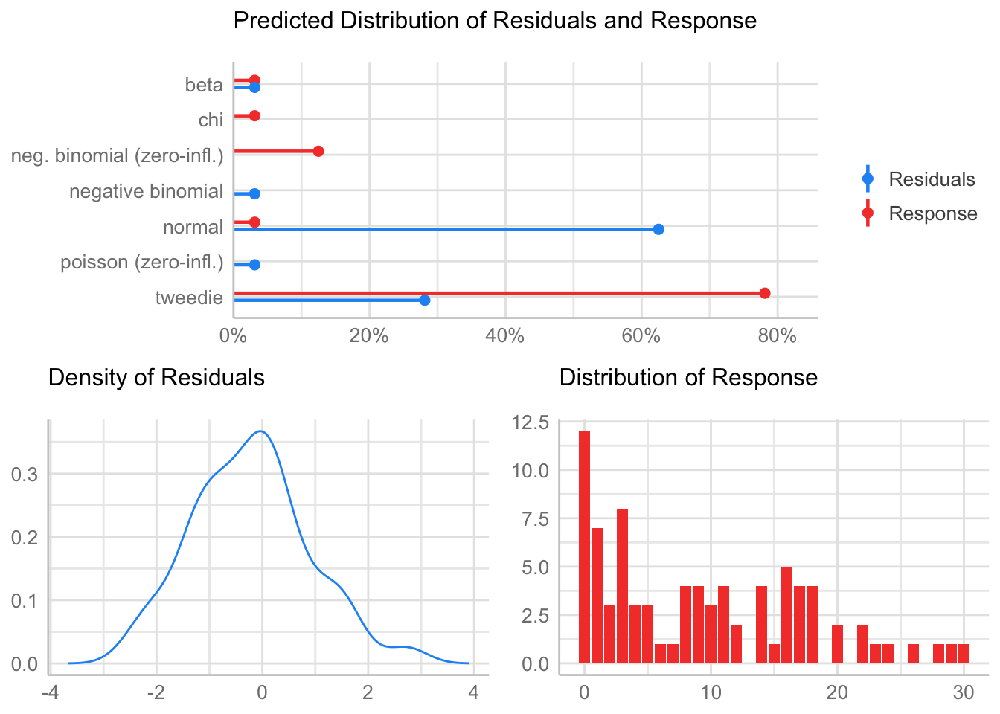
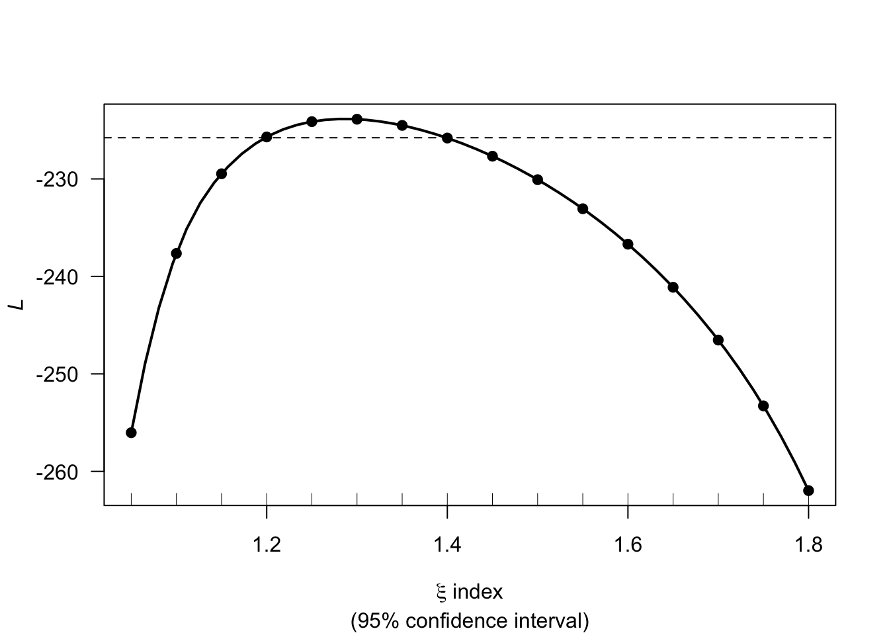
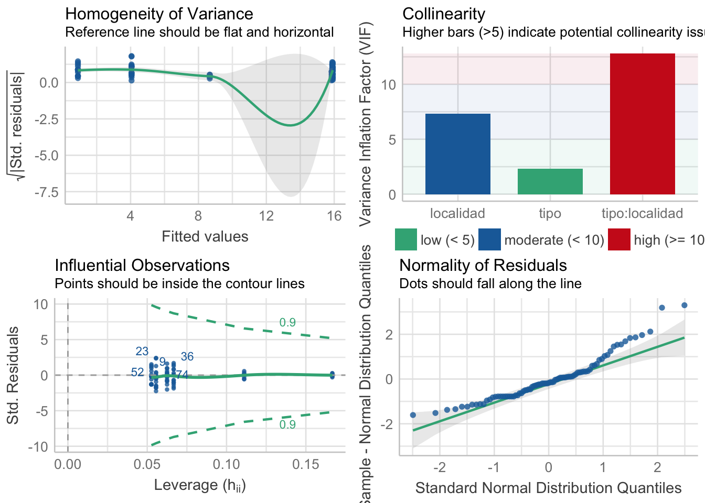
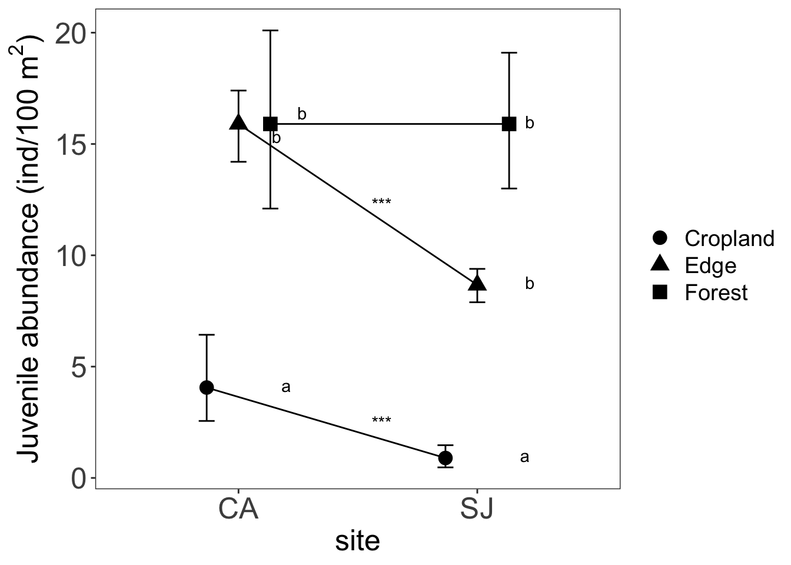
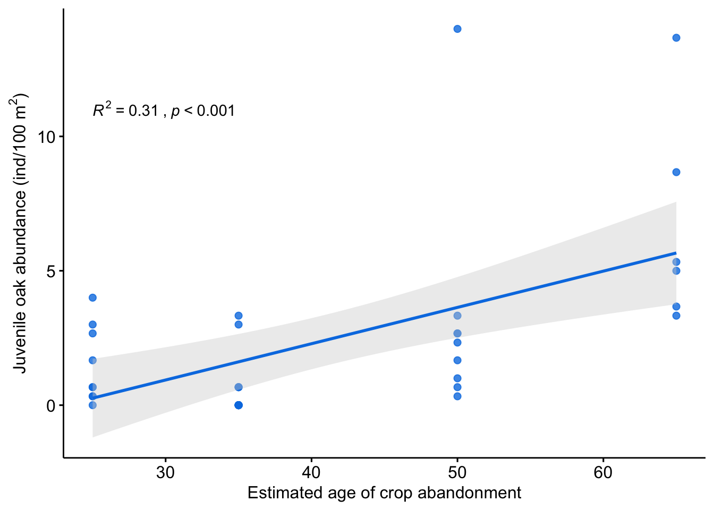
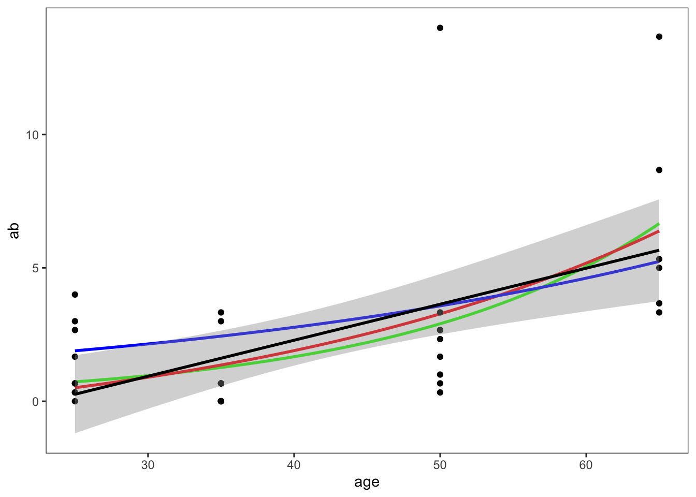

Last updated: 2021-08-05
Checks: 7 0
Knit directory: qpyr_coloniza/
This reproducible R Markdown analysis was created with workflowr (version 1.6.2). The Checks tab describes the reproducibility checks that were applied when the results were created. The Past versions tab lists the development history.
Great! Since the R Markdown file has been committed to the Git repository, you know the exact version of the code that produced these results.
Great job! The global environment was empty. Objects defined in the global environment can affect the analysis in your R Markdown file in unknown ways. For reproduciblity it’s best to always run the code in an empty environment.
The command set.seed(20210804) was run prior to running the code in the R Markdown file. Setting a seed ensures that any results that rely on randomness, e.g. subsampling or permutations, are reproducible.
Great job! Recording the operating system, R version, and package versions is critical for reproducibility.
Nice! There were no cached chunks for this analysis, so you can be confident that you successfully produced the results during this run.
Great job! Using relative paths to the files within your workflowr project makes it easier to run your code on other machines.
Great! You are using Git for version control. Tracking code development and connecting the code version to the results is critical for reproducibility.
The results in this page were generated with repository version 59075d4. See the Past versions tab to see a history of the changes made to the R Markdown and HTML files.
Note that you need to be careful to ensure that all relevant files for the analysis have been committed to Git prior to generating the results (you can use wflow_publish or wflow_git_commit). workflowr only checks the R Markdown file, but you know if there are other scripts or data files that it depends on. Below is the status of the Git repository when the results were generated:
Ignored files:
Ignored: .RData
Ignored: .Rhistory
Ignored: .Rproj.user/
Ignored: images/
Unstaged changes:
Modified: data/abundance_size_class.csv
Modified: data/abundance_tree_class.csv
Modified: data/migrame_observations.csv
Modified: data/tree_data_crops.csv
Modified: ms/juvenile_interaction.pdf
Note that any generated files, e.g. HTML, png, CSS, etc., are not included in this status report because it is ok for generated content to have uncommitted changes.
These are the previous versions of the repository in which changes were made to the R Markdown (analysis/analysis_juvenile_abundance.Rmd) and HTML (docs/analysis_juvenile_abundance.html) files. If you’ve configured a remote Git repository (see ?wflow_git_remote), click on the hyperlinks in the table below to view the files as they were in that past version.
| File | Version | Author | Date | Message |
|---|---|---|---|---|
| html | 7955ca4 | Antonio J Perez-Luque | 2021-08-05 | Build site. |
| Rmd | 2ae9214 | Antonio J Perez-Luque | 2021-08-05 | add age plot |
| html | 2746588 | Antonio J Perez-Luque | 2021-08-04 | Build site. |
| Rmd | 1ec0870 | Antonio J Perez-Luque | 2021-08-04 | add mean values |
| Rmd | c135d88 | Antonio J Perez-Luque | 2021-08-04 | update |
| html | 4715795 | Antonio J Perez-Luque | 2021-08-04 | Build site. |
| Rmd | affd1e5 | Antonio J Perez-Luque | 2021-08-04 | init |
library("tidyverse")
library("here")
library("knitr")
library("kableExtra")
library("plotrix") #std.error
library("rcompanion")
library("statmod")
library("tweedie")
# load functions from Zuur et al (2009)
source(here::here("analysis/HighstatLibV6.R"))
# https://stackoverflow.com/questions/49836521/trouble-installing-glmmadmb-in-r
library('glmmADMB') # See Zuur et al. 2013. p146
library('lattice')
library('MASS') #for negative binomial
library("performance")
library("DHARMa")
library("MuMIn")
library("broom")
library("gtsummary")
library("ggstatsplot")data <- read_csv(here::here("data/tree_data_crops.csv")) %>%
mutate(sp = case_when(
especie == "roble" ~ "qp",
especie == "encina" ~ "qi",
especie == "pino" ~ "pi"
))
# Add data of the transects selected
transectos <- read_csv(here::here("data/transectos_crops.csv"))
info_transectos <- transectos %>%
dplyr::select(nombre, tipo, localidad, crop_code, altitud)
juvenile_abundance <- data %>%
group_by(sp, nombre) %>%
count() %>%
pivot_wider(names_from = sp, values_from = n, names_prefix = "juv_") %>%
rowwise() %>%
mutate(
ntotal = sum(juv_qp, juv_qi, juv_pi, na.rm = TRUE),
nquercus = sum(juv_qp, juv_qi, na.rm = TRUE),
juvenile_ab = round(ntotal * 100 / 300, 2),
juvenileQuer_ab = round(nquercus * 100 / 300, 2),
juvenileQp_ab = round(juv_qp * 100 / 300, 2)
)
df <- info_transectos %>%
left_join(juvenile_abundance) %>%
mutate_all(~ replace_na(., 0))
qp <- df %>%
dplyr::select(nombre, tipo, localidad, altitud, crop_code, ab = juvenileQp_ab) %>%
mutate(
nombre = as.factor(nombre),
tipo = as.factor(tipo),
localidad = as.factor(localidad),
crop_code = as.factor(crop_code)
)Negative binomial, Poisson or Tweedie.
First we modelized a Negative Binomial, because Poisson model is overdispersed
nb <- MASS::glm.nb(ab ~ tipo*localidad, data = qp, link = "log")performance::check_distributionperformance::check_distribution(nb)# Distribution of Model Family
Predicted Distribution of Residuals
Distribution Probability
normal 62%
tweedie 28%
beta 3%
Predicted Distribution of Response
Distribution Probability
tweedie 78%
neg. binomial (zero-infl.) 12%
beta 3%plot(performance::check_distribution(nb))
| Version | Author | Date |
|---|---|---|
| 4715795 | Antonio J Perez-Luque | 2021-08-04 |
We will model with Tweedie distribution, with \(y \sim Tw_{\xi}(\mu, \phi)\)
First we estimate the variance power (\(\xi\)) using tweedie::tweedie.profile function.
set.seed(1234)
# xi parameter
out <- tweedie.profile(ab ~ tipo*altitud, data = qp,
do.plot = TRUE,
xi.vec = seq(1.05, 1.8, by= 0.05))1.05 1.1 1.15 1.2 1.25 1.3 1.35 1.4 1.45 1.5 1.55 1.6 1.65 1.7 1.75 1.8
................Done.
| Version | Author | Date |
|---|---|---|
| 4715795 | Antonio J Perez-Luque | 2021-08-04 |
t(t(c("MLE of xi" = out$xi.max, "lower CI 95%" = out$ci[1], "upper CI 95 %" = out$ci[2]))) %>% as.data.frame() %>% rename("Maximum Likelihood Estimation" = V1) Maximum Likelihood Estimation
MLE of xi 1.279592
lower CI 95% 1.198398
upper CI 95 % 1.398987xi.est <- round(out$xi.max, 2)m <- glm(ab ~ tipo*localidad, data = qp, family = tweedie(var.power = xi.est, link.power = 0))performance::check_model(m)
| Version | Author | Date |
|---|---|---|
| 4715795 | Antonio J Perez-Luque | 2021-08-04 |
library(performance)
mfull <- glm(ab ~ tipo*localidad, data = qp, family = tweedie(var.power = xi.est, link.power = 0))
mtl <- glm(ab ~ tipo + localidad, data = qp, family = tweedie(var.power = xi.est, link.power = 0))
mt <- glm(ab ~ tipo, data = qp, family = tweedie(var.power = xi.est, link.power = 0))
ml <- glm(ab ~ localidad, data = qp, family = tweedie(var.power = xi.est, link.power = 0))
mnull <- glm(ab ~ 1, data = qp, family = tweedie(var.power = xi.est, link.power = 0))
r2 <- function(mimodelo){round(((mimodelo$null.deviance - mimodelo$deviance) / mimodelo$null.deviance),3)}
models_selection <-
model.sel(mfull, mtl, mt, ml, mnull, rank = AICtweedie) %>% as.data.frame() %>%
mutate(model.name = c(
"~ habitat type + site + habitat type:site",
"~ habitat type + site",
"~ habitat type",
"~ site",
"null model"),
f = c(mfull$formula, mtl$formula, mt$formula, ml$formula, mnull$formula),
r2nagelkerke = round(
c(r2_nagelkerke(mfull), r2_nagelkerke(mtl), r2_nagelkerke(mt), r2_nagelkerke(ml),r2_nagelkerke(mnull)),3),
r2 = round(
c(r2(mfull), r2(mtl), r2(mt), r2(ml), r2(mnull)),3),
logLiktweedie = c(logLiktweedie(mfull),
logLiktweedie(mtl),
logLiktweedie(mt),
logLiktweedie(ml),
logLiktweedie(mnull)
)) %>%
dplyr::select(-f, -localidad, -tipo, -`localidad:tipo`, -family,-`(Intercept)`, -logLik, -weight) %>%
relocate(model.name, df, logLiktweedie)
write.table(models_selection,
here::here("ms/table_model_selection.csv"))options(knitr.kable.NA = '') # suppress showing NA values in table
kable(models_selection, format = "html",
digits = c(0, 0, 2, 2, 2, 3,3), align = "rrrrrrr", row.names = FALSE) %>%
kable_styling(position = "left")| model.name | df | logLiktweedie | AICtweedie | delta | r2nagelkerke | r2 |
|---|---|---|---|---|---|---|
| ~ habitat type + site + habitat type:site | 6 | -221.89 | 457.78 | 0.00 | 0.970 | 0.678 |
| ~ habitat type + site | 4 | -231.83 | 473.66 | 15.88 | 0.955 | 0.610 |
| ~ habitat type | 3 | -236.21 | 480.42 | 22.64 | 0.946 | 0.578 |
| ~ site | 2 | -291.06 | 588.12 | 130.34 | 0.116 | 0.025 |
| null model | 1 | -293.10 | 590.19 | 132.41 | 0.000 | 0.000 |
library(car)
library(kableExtra)
a <- Anova(mfull, test="F") %>% as.data.frame()
names(a) <- c("SS", "df", "F", "p-value")
write.table(a, here::here("ms/table_anova.csv"))options(knitr.kable.NA = '') # suppress showing NA values in table
kable(a, format = "html",
digits = c(3, 0, 2, 4), align = "rrrr") %>%
kable_styling(position = "left")| SS | df | F | p-value | |
|---|---|---|---|---|
| tipo | 233.892 | 2 | 72.95 | 0.0000 |
| localidad | 13.090 | 1 | 8.17 | 0.0055 |
| tipo:localidad | 27.197 | 2 | 8.48 | 0.0005 |
| Residuals | 123.432 | 77 |
library("report")
report(mfull)We fitted a general linear model (Tweedie family with a mu^0 link) (estimated using ML) to predict ab with tipo and localidad (formula: ab ~ tipo * localidad). The model's explanatory power is substantial (Nagelkerke's R2 = 0.97). The model's intercept, corresponding to tipo = CLARO and localidad = CANAR, is at 1.40 (95% CI [1.04, 1.74], p < .001). Within this model:
- The effect of tipo [CLARO_BORDE] is statistically significant and positive (beta = 1.36, 95% CI [0.90, 1.83], p < .001; Std. beta = 1.36, 95% CI [0.90, 1.83])
- The effect of tipo [ROBLEDAL] is statistically significant and positive (beta = 1.37, 95% CI [0.94, 1.80], p < .001; Std. beta = 1.37, 95% CI [0.94, 1.80])
- The effect of localidad [SANJUAN] is statistically significant and negative (beta = -1.51, 95% CI [-2.22, -0.84], p < .001; Std. beta = -1.51, 95% CI [-2.22, -0.84])
- The interaction effect of localidad [SANJUAN] on tipo [CLARO_BORDE] is statistically significant and positive (beta = 0.91, 95% CI [0.03, 1.80], p < .05; Std. beta = 0.91, 95% CI [0.03, 1.80])
- The interaction effect of localidad [SANJUAN] on tipo [ROBLEDAL] is statistically significant and positive (beta = 1.51, 95% CI [0.76, 2.29], p < .001; Std. beta = 1.51, 95% CI [0.76, 2.29])
Standardized parameters were obtained by fitting the model on a standardized version of the dataset. 95% Confidence Intervals (CIs) and p-values were computed using report_performance(mfull)The model's explanatory power is substantial (Nagelkerke's R2 = 0.97)report_statistics(mfull)beta = 1.40, 95% CI [1.04, 1.74], p < .001; Std. beta = 1.40, 95% CI [1.04, 1.74]
beta = 1.36, 95% CI [0.90, 1.83], p < .001; Std. beta = 1.36, 95% CI [0.90, 1.83]
beta = 1.37, 95% CI [0.94, 1.80], p < .001; Std. beta = 1.37, 95% CI [0.94, 1.80]
beta = -1.51, 95% CI [-2.22, -0.84], p < .001; Std. beta = -1.51, 95% CI [-2.22, -0.84]
beta = 0.91, 95% CI [0.03, 1.80], p < .05; Std. beta = 0.91, 95% CI [0.03, 1.80]
beta = 1.51, 95% CI [0.76, 2.29], p < .001; Std. beta = 1.51, 95% CI [0.76, 2.29]library(ggpubr)
library(broom)
library(plotrix)
library(rcompanion)
library(multcompView)
library(multcomp)
library(ggrepel)
ab_mean <- qp %>%
group_by(localidad, tipo) %>%
summarise(
mean = mean(ab, na.rm = TRUE),
sd = sd(ab, na.rm = TRUE),
se = plotrix::std.error(ab, na.rm = TRUE)
)
ab_boot <- groupwiseMean(ab ~ localidad + tipo,
data = qp,
conf = 0.95,
digits = 3,
R = 10000,
boot = TRUE,
traditional = FALSE,
normal = FALSE,
basic = FALSE,
percentile = FALSE,
bca = TRUE) %>%
mutate(site =
case_when(localidad == "CANAR" ~ "CA",
TRUE ~ "SJ"),
type =
case_when(tipo == "CLARO" ~ "Cropland",
tipo == "CLARO_BORDE" ~ "Edge",
TRUE ~ "Forest")) %>%
inner_join((qp %>% group_by(localidad, tipo) %>%
summarise(se = round(plotrix::std.error(ab, na.rm = TRUE),2)))) %>%
relocate(localidad:Mean, se) %>% ungroup() %>% as.data.frame()
## Add letters
### Compare bewteen sites by type
library(lsmeans)
letter_type <-
cld(lsmeans(mfull, ~ tipo|localidad),
level = .95,
Letters=letters, ### Use lower-case letters for .group
adjust="tukey", ### Tukey-adjusted comparisons
) %>% data.frame()
ab_boot <- ab_boot %>% inner_join(letter_type) %>%
rename(letra = `.group`)
l_site <- ab_boot %>% group_by(type) %>%
summarise(y = mean(Mean)) %>%
mutate(dif =
case_when(type == "Cropland" ~ "***",
type == "Edge" ~ "***",
type == "Forest" ~ ""))
pd <- position_dodge(.4)
ab_interaction <-
ggplot(data=ab_boot,
aes(x=site, y=Mean, shape=type, group=type)) +
geom_point(color='black', size=4, position=pd) +
geom_errorbar(aes(ymin=Bca.lower, ymax=Bca.upper),
color='black', width=.2, position=pd) +
geom_line(position=pd) +
xlab("site") +
ylab(expression(paste("Juvenile abundance (ind/100 ",m^2,")"))) +
theme_bw() +
guides(shape=guide_legend(title="")) +
theme(panel.grid = element_blank()) +
geom_text_repel(nudge_x = 0.2,
nudge_y = 0.1,
direction = "both",
aes(label=letra),
segment.color = NA) +
geom_text(data=l_site, aes(y=y, x=1.6, label=dif))+
theme(axis.title=element_text(size = rel(1.7)),
axis.text=element_text(size = rel(1.7)),
legend.title=element_text(size = rel(1.3)),
legend.text=element_text(size = rel(1.3)))write.table(ab_boot, here::here("ms/table_means.csv"))print(ab_interaction)
| Version | Author | Date |
|---|---|---|
| 4715795 | Antonio J Perez-Luque | 2021-08-04 |
ggsave(ab_interaction, filename = here::here("ms/juvenile_interaction.pdf"))qp %>%
dplyr::select(ab, localidad) %>%
tbl_summary(by = localidad,
label = list(ab ~ "Juvenile abundance"),
statistic = list(ab ~ "{mean} ({std.error})"),
digits = list(ab ~ c(2,2))) | Characteristic | CANAR, N = 421 | SANJUAN, N = 411 |
|---|---|---|
| Juvenile abundance | 10.81 (1.26) | 7.89 (1.26) |
|
1
Mean (std.error)
|
||
qp %>%
dplyr::select(ab, tipo) %>%
tbl_summary(by = tipo,
label = list(ab ~ "Juvenile abundance"),
statistic = list(ab ~ "{mean} ({std.error})"),
digits = list(ab ~ c(2,2))) | Characteristic | CLARO, N = 371 | CLARO_BORDE, N = 151 | ROBLEDAL, N = 311 |
|---|---|---|---|
| Juvenile abundance | 2.43 (0.55) | 12.98 (1.09) | 15.90 (1.30) |
|
1
Mean (std.error)
|
|||
qp %>%
dplyr::select(tipo, localidad, ab) %>%
tbl_strata(
strata = localidad,
.tbl_fun =
~.x %>%
tbl_summary(
by = tipo,
missing = "no",
label = list(ab ~ "Juvenile abundance"),
statistic = all_continuous() ~ "{mean} ({std.error})",
digits = everything() ~ 2
))| Characteristic | CANAR | SANJUAN | ||||
|---|---|---|---|---|---|---|
| CLARO, N = 181 | CLARO_BORDE, N = 91 | ROBLEDAL, N = 151 | CLARO, N = 191 | CLARO_BORDE, N = 61 | ROBLEDAL, N = 161 | |
| Juvenile abundance | 4.06 (0.98) | 15.85 (0.88) | 15.89 (2.14) | 0.90 (0.26) | 8.67 (0.43) | 15.92 (1.61) |
|
1
Mean (std.error)
|
||||||
pairs(emmeans(mfull, c("tipo"), by="localidad")) %>%
data.frame() %>%
kable(format = "html",
digits = c(0,0,3, 3, 0, 3, 4), align = "rrrrrrr") %>%
kable_styling(position = "left")| contrast | localidad | estimate | SE | df | z.ratio | p.value |
|---|---|---|---|---|---|---|
| CLARO - CLARO_BORDE | CANAR | -1.363 | 0.238 | Inf | -5.716 | 0.0000 |
| CLARO - ROBLEDAL | CANAR | -1.365 | 0.217 | Inf | -6.292 | 0.0000 |
| CLARO_BORDE - ROBLEDAL | CANAR | -0.002 | 0.197 | Inf | -0.012 | 0.9999 |
| CLARO - CLARO_BORDE | SANJUAN | -2.270 | 0.384 | Inf | -5.905 | 0.0000 |
| CLARO - ROBLEDAL | SANJUAN | -2.878 | 0.324 | Inf | -8.881 | 0.0000 |
| CLARO_BORDE - ROBLEDAL | SANJUAN | -0.608 | 0.265 | Inf | -2.296 | 0.0563 |
pairs(emmeans(mfull, c("localidad"), by="tipo")) %>% data.frame() %>%
kable(format = "html",
digits = c(0,0,3, 3, 0, 3, 4), align = "rrrrrrr") %>%
kable_styling(position = "left")| contrast | tipo | estimate | SE | df | z.ratio | p.value |
|---|---|---|---|---|---|---|
| CANAR - SANJUAN | CLARO | 1.511 | 0.352 | Inf | 4.293 | 0.0000 |
| CANAR - SANJUAN | CLARO_BORDE | 0.604 | 0.284 | Inf | 2.124 | 0.0337 |
| CANAR - SANJUAN | ROBLEDAL | -0.002 | 0.168 | Inf | -0.011 | 0.9914 |
ages <- read_csv("data/age_cultivos.csv")
qptemp <- qp %>%
filter(tipo == "CLARO") %>% inner_join(
ages %>% dplyr::select(crop_code, age)
)
micolor <- '#007EE3'
ageplot <- ggscatter(data = qptemp, x="age", y="ab",
color = micolor, shape=19, alpha = .8,
add = "reg.line",
add.params =
list(color = micolor, fill = "lightgray"),
conf.int = TRUE,
xlab = "Estimated age of crop abandonment",
ylab = expression(paste('Juvenile oak abundance (ind/100 ', m^2,')', sep=""))) +
stat_cor(method = "pearson",
label.x = 25, label.y = 11,
p.accuracy = 0.001, r.accuracy = 0.01,
aes(label = paste(..rr.label.., ..p.label.., sep = "~`,`~"))) print(ageplot)
| Version | Author | Date |
|---|---|---|
| 7955ca4 | Antonio J Perez-Luque | 2021-08-05 |
m.age1 <- nls(ab ~ exp(b*age),
data = qptemp,
start = list(b = 0.03))
summary(m.age1)
Formula: ab ~ exp(b * age)
Parameters:
Estimate Std. Error t value Pr(>|t|)
b 0.025488 0.002781 9.165 6.05e-11 ***
---
Signif. codes: 0 '***' 0.001 '**' 0.01 '*' 0.05 '.' 0.1 ' ' 1
Residual standard error: 2.916 on 36 degrees of freedom
Number of iterations to convergence: 5
Achieved convergence tolerance: 1.316e-06# R nagelkerke
modelr::rsquare(m.age1, data = qptemp)[1] 0.2857689m.age2 <- nls(ab ~ a*exp(b*age),
data = qptemp,
start = list(a = 0.18, b = 0.05))
summary(m.age2)
Formula: ab ~ a * exp(b * age)
Parameters:
Estimate Std. Error t value Pr(>|t|)
a 0.18230 0.16539 1.102 0.277878
b 0.05536 0.01501 3.688 0.000762 ***
---
Signif. codes: 0 '***' 0.001 '**' 0.01 '*' 0.05 '.' 0.1 ' ' 1
Residual standard error: 2.73 on 35 degrees of freedom
Number of iterations to convergence: 4
Achieved convergence tolerance: 1.073e-07# R nagelkerke
modelr::rsquare(m.age2, data = qptemp)[1] 0.3633606m.age3 <- nls(ab ~ a + exp(b*age),
data = qptemp,
start = list(a = -1.7, b = 0.05))
summary(m.age3)
Formula: ab ~ a + exp(b * age)
Parameters:
Estimate Std. Error t value Pr(>|t|)
a -1.728823 0.716836 -2.412 0.0213 *
b 0.032207 0.002808 11.472 2.07e-13 ***
---
Signif. codes: 0 '***' 0.001 '**' 0.01 '*' 0.05 '.' 0.1 ' ' 1
Residual standard error: 2.754 on 35 degrees of freedom
Number of iterations to convergence: 5
Achieved convergence tolerance: 1.894e-06# R nagelkerke
modelr::rsquare(m.age3, data = qptemp)[1] 0.3518764ggplot(qptemp, aes(x=age, y=ab)) +
geom_smooth(method = "nls",
formula = y ~ a*exp(b*x),
se = FALSE, colour = "green",
method.args = list(start = list(a= 0.18, b = 0.05))) +
geom_smooth(method = "nls",
formula = y ~ a + exp(b*x),
se = FALSE, colour = "red",
method.args = list(start = list(a = -1.72, b = 0.03))) +
geom_smooth(method = "nls",
formula = y ~ exp(b*x),
se = FALSE, colour = "blue",
method.args = list(start = list(b = 0.02))) +
geom_point() +
theme_bw() +
theme(panel.grid = element_blank()) +
geom_smooth(method = "lm", colour = "black")
| Version | Author | Date |
|---|---|---|
| 7955ca4 | Antonio J Perez-Luque | 2021-08-05 |
sessionInfo()R version 4.0.2 (2020-06-22)
Platform: x86_64-apple-darwin17.0 (64-bit)
Running under: macOS Catalina 10.15.3
Matrix products: default
BLAS: /Library/Frameworks/R.framework/Versions/4.0/Resources/lib/libRblas.dylib
LAPACK: /Library/Frameworks/R.framework/Versions/4.0/Resources/lib/libRlapack.dylib
locale:
[1] en_US.UTF-8/en_US.UTF-8/en_US.UTF-8/C/en_US.UTF-8/en_US.UTF-8
attached base packages:
[1] stats graphics grDevices utils datasets methods base
other attached packages:
[1] lsmeans_2.30-0 emmeans_1.5.4 ggrepel_0.9.1 multcomp_1.4-16
[5] TH.data_1.0-10 survival_3.2-7 mvtnorm_1.1-1 multcompView_0.1-8
[9] ggpubr_0.4.0 report_0.3.0 car_3.0-10 carData_3.0-4
[13] ggstatsplot_0.7.2 gtsummary_1.4.2 broom_0.7.9 MuMIn_1.43.17
[17] DHARMa_0.3.3.0 performance_0.7.2 lattice_0.20-41 glmmADMB_0.8.3.3
[21] MASS_7.3-53 tweedie_2.3.3 statmod_1.4.36 rcompanion_2.3.27
[25] plotrix_3.8-1 kableExtra_1.3.1 knitr_1.31 here_1.0.1
[29] forcats_0.5.1 stringr_1.4.0 dplyr_1.0.6 purrr_0.3.4
[33] readr_1.4.0 tidyr_1.1.3 tibble_3.1.2 ggplot2_3.3.3
[37] tidyverse_1.3.1 workflowr_1.6.2
loaded via a namespace (and not attached):
[1] utf8_1.1.4 tidyselect_1.1.0
[3] lme4_1.1-26 grid_4.0.2
[5] gmp_0.6-2 munsell_0.5.0
[7] codetools_0.2-18 effectsize_0.4.5
[9] withr_2.4.1 colorspace_2.0-0
[11] highr_0.8 rstudioapi_0.13
[13] stats4_4.0.2 DescTools_0.99.40
[15] robustbase_0.93-7 ipmisc_5.0.2
[17] ggsignif_0.6.0 labeling_0.4.2
[19] git2r_0.28.0 farver_2.0.3
[21] rprojroot_2.0.2 coda_0.19-4
[23] vctrs_0.3.8 generics_0.1.0
[25] xfun_0.23 randomForest_4.6-14
[27] BWStest_0.2.2 R6_2.5.0
[29] BayesFactor_0.9.12-4.2 cachem_1.0.4
[31] reshape_0.8.8 assertthat_0.2.1
[33] promises_1.2.0.1 scales_1.1.1
[35] rootSolve_1.8.2.1 gtable_0.3.0
[37] lmom_2.8 sandwich_3.0-0
[39] qqplotr_0.0.5 rlang_0.4.10
[41] MatrixModels_0.4-1 EMT_1.1
[43] zeallot_0.1.0 PMCMRplus_1.9.0
[45] splines_4.0.2 rstatix_0.6.0
[47] checkmate_2.0.0 abind_1.4-5
[49] yaml_2.2.1 modelr_0.1.8
[51] backports_1.2.1 httpuv_1.5.5
[53] tools_4.0.2 ellipsis_0.3.2
[55] jquerylib_0.1.3 WRS2_1.1-1
[57] ggridges_0.5.3 Rcpp_1.0.6
[59] plyr_1.8.6 pbapply_1.4-3
[61] correlation_0.6.1 zoo_1.8-8
[63] haven_2.3.1 fs_1.5.0
[65] magrittr_2.0.1 data.table_1.13.6
[67] openxlsx_4.2.3 lmtest_0.9-38
[69] reprex_2.0.0 whisker_0.4
[71] matrixStats_0.58.0 hms_1.0.0
[73] patchwork_1.1.1 evaluate_0.14
[75] xtable_1.8-4 rio_0.5.16
[77] pairwiseComparisons_3.1.3 readxl_1.3.1
[79] gridExtra_2.3 compiler_4.0.2
[81] gt_0.3.0 crayon_1.4.1
[83] minqa_1.2.4 htmltools_0.5.1.1
[85] mgcv_1.8-33 mc2d_0.1-18
[87] later_1.1.0.1 libcoin_1.0-7
[89] expm_0.999-6 Exact_2.1
[91] lubridate_1.7.10 DBI_1.1.1
[93] SuppDists_1.1-9.5 kSamples_1.2-9
[95] dbplyr_2.1.1 broom.helpers_1.3.0
[97] see_0.6.4 boot_1.3-26
[99] Matrix_1.3-2 cli_2.5.0
[101] parallel_4.0.2 insight_0.14.1
[103] pkgconfig_2.0.3 statsExpressions_1.1.0
[105] foreign_0.8-81 coin_1.4-0
[107] xml2_1.3.2 paletteer_1.3.0
[109] foreach_1.5.1 bslib_0.2.4
[111] ggcorrplot_0.1.3 webshot_0.5.2
[113] R2admb_0.7.16.2 estimability_1.3
[115] rvest_1.0.0 digest_0.6.27
[117] parameters_0.14.0 rmarkdown_2.8
[119] cellranger_1.1.0 nortest_1.0-4
[121] gld_2.6.2 curl_4.3
[123] commonmark_1.7 gtools_3.8.2
[125] modeltools_0.2-23 nloptr_1.2.2.2
[127] lifecycle_1.0.0 nlme_3.1-152
[129] jsonlite_1.7.2 viridisLite_0.3.0
[131] fansi_0.4.2 pillar_1.6.1
[133] fastmap_1.1.0 httr_1.4.2
[135] DEoptimR_1.0-8 glue_1.4.2
[137] zip_2.1.1 bayestestR_0.9.0
[139] iterators_1.0.13 class_7.3-18
[141] stringi_1.5.3 sass_0.3.1
[143] rematch2_2.1.2 memoise_2.0.0
[145] Rmpfr_0.8-2 e1071_1.7-4